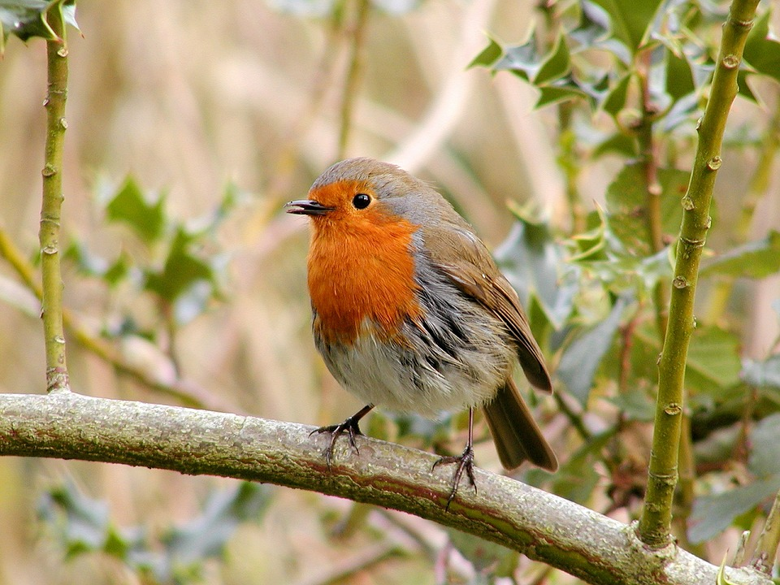
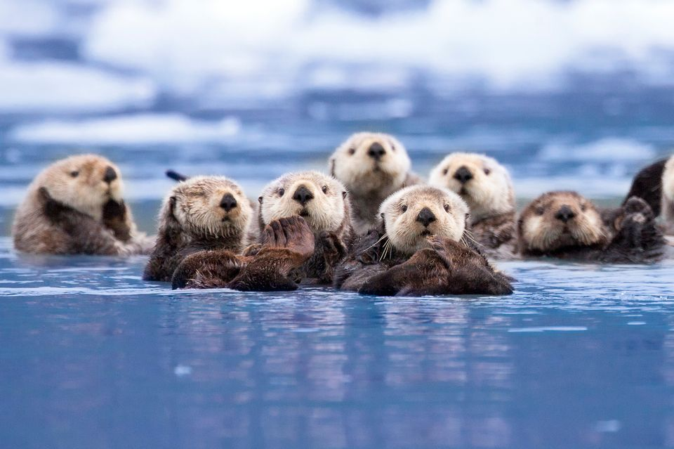

To add an image into the page you need an img element. This is an empty element (which means there is no closing tag). It must carry the following two attributes:
SRC
This tells the browser where it can find the image file.
This will usually be a relative URL pointing to an image on your own site. (here you can see that the images are in a child folder called images.
ALT
This provides a text desciption of the image which describes the image if you cannot see it.
TITLE
You can also use the title attribute with the (img) element to provide additional informaton about the image. Most browsers will display the content of this attribure in a tooltip when the user hovers over the image.
The text used in the (alt) attribute is often referred to as alt text. It should give an accurate desciption of the image content so it can be understood by screen reader software (used by people with visual impairments) and search engines.
If the image is just to make a page look more attractive (and it has no meaning, such as a graphic dividing line), then the (alt) attribute should still be used but the quotes should be left empty.
HEIGHT
This specifies the height of the image in pixels.
WIDTH
This specifies the width of the image in pixels.
Images often take longer to load than the HTML code that makes up the rest of the page. It is, therefore, a good idea to specify the size of the image so that the browser can render the rest of the text on the page while leaving the right amount of space for the image that is still loading.
Example
STYLE
You can use the style attribute to specify the width and height of an image.
The values are specified in pixels (use px after the value):
Both the width, height, and style attributes are valid in HTML5.
However, we suggest using the style attribute. It prevents internal or external styles sheets from changing the original size of images:
ANIMATED IMAGES
The GIF standard allows animated images:
USING AN IMAGE AS A LINK
To use an image as a link, simply nest the (img) tag inside the (a) tag:
Where To Place Images In Your Code
Where an image is placed in the code will affect how it is displayed.
Here are three examples of image placement that produce different results:
BEFORE A PARAGRAPH
The paragraph starts on a new line after the image
INSIDE THE START OF A PARAGRAPH
The first row of the text aligns with the bottom of the image
IN THE MIDDLE OF A PARAGRAPH
The image is placed between the words of the paragraph that it appears in
Examples

There are around 10,000 living species of birds that inhabit different ecosystems from the Actic to the Antarctic. Many species undertake long distance annual migrations, and many more perform shorter irregular journeys.
There are around 10,000 living species of birds that inhabit different ecosystems from the Actic to the Antarctic. Many species undertake long distance annual migrations, and many more perform shorter irregular journeys.
There are around 10,000 living species of birds that inhabit different ecosystems from the Actic to the Antarctic.
Many species undertake long distance annual migrations, and many more perform shorter irregular journeys.
Where you place the image in the code is important because browsers show HTML Elements in one of two ways:
BLOCK ELEMENTS ALWAYS APPEAR ON A NEW LINE
Examples of block elements include the (h1) and (p) elements
If the (img) is followed by a block level element (such as a paragraph) then the block level element will sit on a new line after the image as shown in the first example on this page
INLINE ELEMENTS SIT WITHIN A BLOCK LEVEL ELEMENT AND DO NOT START ON A NEW LINE
Examples of inline elements include the (b), (em), and (img) elements.
If the (img) element is inside a block level element, any text or other inline elements, any text or other inline elements will flow around the image, as shown in the second and third examples on this page.
OLD CODE: Aligning Images Horizontally
ALIGN
The (align) attribute was commonly used to indicate how the other parts of a page should flow around an image. It has been removed from HTML5 and new websites should use CSS to control the alignment of images.
I have discussed it here because you are likely to come across it if you look at older code, and because some visual editors still insert this attribute when you indicate how an image should be aligned.
The align attribute can take these horizontal values:
LEFT
This aligns the image to the left (allowing text to flow around its right-hand side)
RIGHT
This aligns the image to the right (allowing text to flow around its left-hand side)
Examples
There are around 10,000 living species of birds that inhabit different ecosystems from the Actic to the Antarctic. Many species undertake long distance annual migrations, and many more perform shorter irregular journeys.
There are around 10,000 living species of birds that inhabit different ecosystems from the Actic to the Antarctic. Many species undertake long distance annual migrations, and many more perform shorter irregular journeys.
This looks a lot neater than having one line of text next to the image (as shown on the previous example)
When you give the align attribute a value of left, the image is placed on the left and text flows around it
When you give the (align) attribute a value of right, the image is placed on the right and the text flows around it
OLD CODE: Aligning Images Vertically
As you saw on the last page, the (align) attribute is no longer used in HTML5, but it is covered here becasue you may see it used in older websites and it is still used in the code created by some visual editors.
There are three values that the (align) attribute can take that control how the image should align vertically with the text that surrounds it.
TOP
This aligns the first line of the surrounding text with the top of the image
The value of top places the first line of text near the top of the image and subsequent lines of text appear under the image.
Example
There are around 10,000 living species of birds that inhabit different ecosystems from the Actic to the Antarctic. Many species undertake long distance annual migrations, and many more perform shorter irregular journeys.
MIDDLE
This aligns the first line of the surrounding text with the middle of the image
The value of middle places the first line of text near the vertical middle of the image and subsequent lines of text appear under the image.
Example
There are around 10,000 living species of birds that inhabit different ecosystems from the Actic to the Antarctic. Many species undertake long distance annual migrations, and many more perform shorter irregular journeys.
BOTTOM
This aligns the first line of the surrounding text with the bottom of the image
The value of bottom places the first line of text near the bottom of the image and subsequent lines of text under the image.
Example
There are around 10,000 living species of birds that inhabit different ecosystems from the Actic to the Antarctic. Many species undertake long distance annual migrations, and many more perform shorter irregular journeys.
Image Floating
Use the CSS float property to let the image float to the right or to the left of a text:
The image will float to the right of the text.
The image will float to the left of the text.
Image Maps
Use the (map) tag to define an image-map. An image-map is an image with clickable areas.
The name attribute of the (map) tag is associated with the (img)'s usemap attribute and creates a relationship between the image and the map.
The (map) tag contains a number of (area) tags, that defines the clickable areas in the image-map:
Chapter Summary
IMG
Element to define an image
SRC
Attribute to define the URL of the image
ALT
Attribute to define an alternate text for an image, if it cannot be displayed
HTML WIDTH and HEIGHT ATTRIBUTES
To define the size of the image
CSS WIDTH and HEIGHT PROPERTIES
Properties to define the size of the image (alternatively)
CSS FLOAT
Property to let the image float
MAP
Element to define an image-map
AREA
Element to define the clickable areas in the image-map
USEMAP
Element usemap attribute to point to an image-map
Three Rules For Creating Images
SAVING IMAGES IN THE RIGHT FORMAT
Websites mainly use images in following formats:
jpeg
gif
png
Save Images At The Right Size
You should save the image at the same width and height it will appear on the website (measured in pixels).
If the image is smaller than the width and height that you have specified, the image can be distorted and stretched.
If the image is larger than the width and height you have specified, the image will take longer to display on the page.
Tools To Edit & Save Images
There are several tools you can use to edit and save images to ensure that they are the right size, format and resolution.
The most popular tool amongst web professionals is Adobe Photoshop. (In fact, professional web designers often use this software to desing entire sites.)
The full version of Photoshop is expensive, but there is a cheaper version called Photoshop Elements which would suit the needs of most begineers.
OTHER SOFTWARE
Adobe Fireworks
Pixelmator
PaintShop Pro
Paint.net
ONLINE EDITORS
www.photoshop.com
www.pixlr.com
www.splashup.com
www.ipiccy.com
ONLINE EXTRA
Watch videos that demonstrate how to resize images and save them in correct format using both of these applications
TIPS
Whenever you have many different colours in a picture you should use a JPEG.
A photo that features snow or an overcast sky might look like it has large areas that are just white or gray, but the picture is usually made up of many different colours that are subtly different.
Use GIF or PNG format when saving images with few colours or large areas of the same colour.
When a picture has an area that is filled with exactly the same colour, it is known as flat colour.
Logos, illustrations and diagrams often use flat colours. (Note that photos of snow, sky or grass are not flat colours, they are made up of many subtly different shades of the same colour and are not as suited to GIF or PNG format.
Image Dimensions
The images you use on your website should be saved at the same width and height that you want them to appear on the page.
For example, if you have designed a page to include an image that is 300 pixels wide by 150 pixels tall, the image you use should be 300 x 150 pixels. You may need to use image editing tools to resize and crop the image.
When sourcing images, it is important to understand how you can alter the dimensions of an image.
Imagine that you had designed a web page to include an image that is 300 pixels wide by 150 pixels tall:
REDUCING IMAGE SIZE
You can reduce the size of images to create a smaller version of the image.
Example: If your image is 600 pixels wide and 300 pixels tall, you can reduce that size of the image by 50%.
Result: This will create an image that is quicker to download.
INCREASING IMAGE SIZE
You cannot increase the size of photos signicifantly without affecting the image quality.
Example: If your image is only 100 pixels wide by 50 pixels tall, increasing the size by 300% would result in poor quality.
Result: The image will look blurry or blocky.
CHANGING SHAPE
Only some images can be cropped without losing valuable information.
Example: If your image is 300 pixels square, you can remove parts of it, but in doing so you might lose valuable information.
Result: Only some images can be cropped and still make sense.
Vector Images
Vector images differ from bitmap images and are resolution-independent. Vector Images are commonly created in programs such as Adobe Illustrator.
Vector images are created by placing point on a grid and drawing lines between thsoe points. A colour can then be added to "fill in" the lines that have been created.
The advantage of creating line drawings in vector format is that you can increase the dimensions of the image without affecting the quality of it.
HTML5: Figure and Figure Caption
(figure): Images often come with captions. HTML5 has introduced a new (figure) elemnt to contain images and thei caption so that the two are associated.
You can have more than one image inside the (figure) element as long as they all share the same caption.
Browsers sometimes indent the contents of the (figure) elemenet.
(figcaption): is an element that has been added to HTML5 in order to allow web age authors to add a caption to an image.
Before these elements were created there was no way to associate an (img) element with its caption.
Older browsers that do not understand HTML5 elements simply ignore the new elements and display content of them.
Example:

Sea otters hold hands when they sleep so they don't drift away from each other